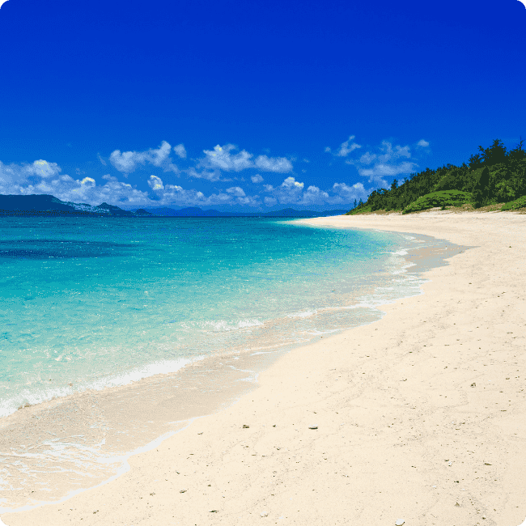
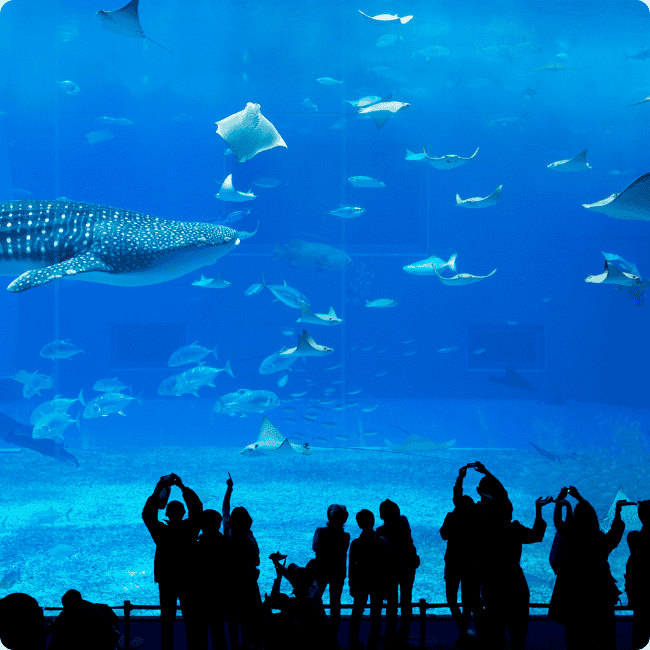

Okinawa
About Okinawa
Okinawa is a subtropical island prefecture in southern Japan known for its stunning beaches, turquoise waters, and unique cultural blend of Japanese and Ryukyuan heritage. Historically the center of the Ryukyu Kingdom, it has its own distinct language, music, and cuisine, such as Okinawa soba and goya champuru. The islands are popular for diving, snorkeling, and exploring coral reefs. Its relaxed pace, friendly locals, and rich traditions make it a fascinating destination different from mainland Japan.
-
Okinawa's Beatiful Beaches
Figure 1: A view of Okinawa's Beach -
Churaumi Aquarium
Figure 2: A photo of Churaumi Aquarium